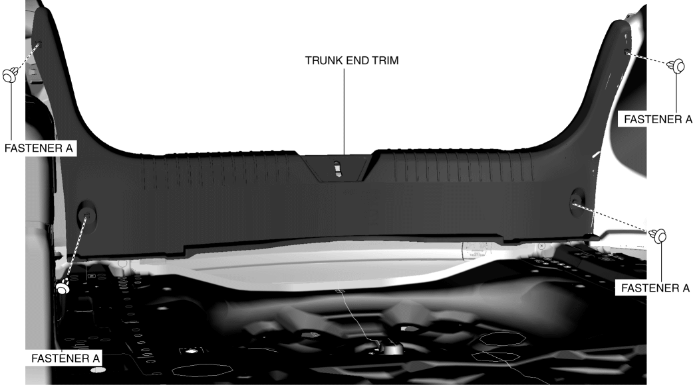
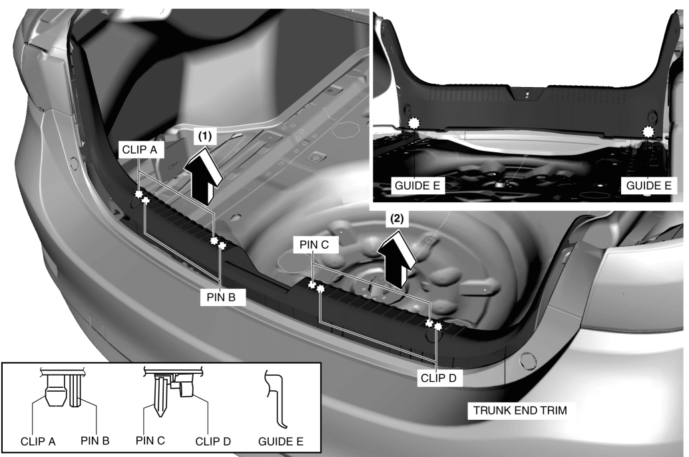

< Previous
Next >
2014 -
Mazda6 -
Body and Accessories
TRUNK END TRIM REMOVAL/INSTALLATION
1. Remove the following parts: a. Trunk covering (See TRUNK COVERING REMOVAL/INSTALLATION.)
b. Trunk board (See TRUNK BOARD REMOVAL/INSTALLATION.)
c. Trunk side pocket (See TRUNK SIDE POCKET REMOVAL/INSTALLATION.)
2. Partially peel back the seaming welt.
3. Remove fasteners A.

4. Pull the trunk end trim in the direction of the arrow in the order of (1), (2) shown in the figure while detaching clips A, pins B, pins C, clips D, and guide E.

5. Install in the reverse order of removal.
< Previous
Next >
© 2012 Mazda North American Operations, U.S.A.